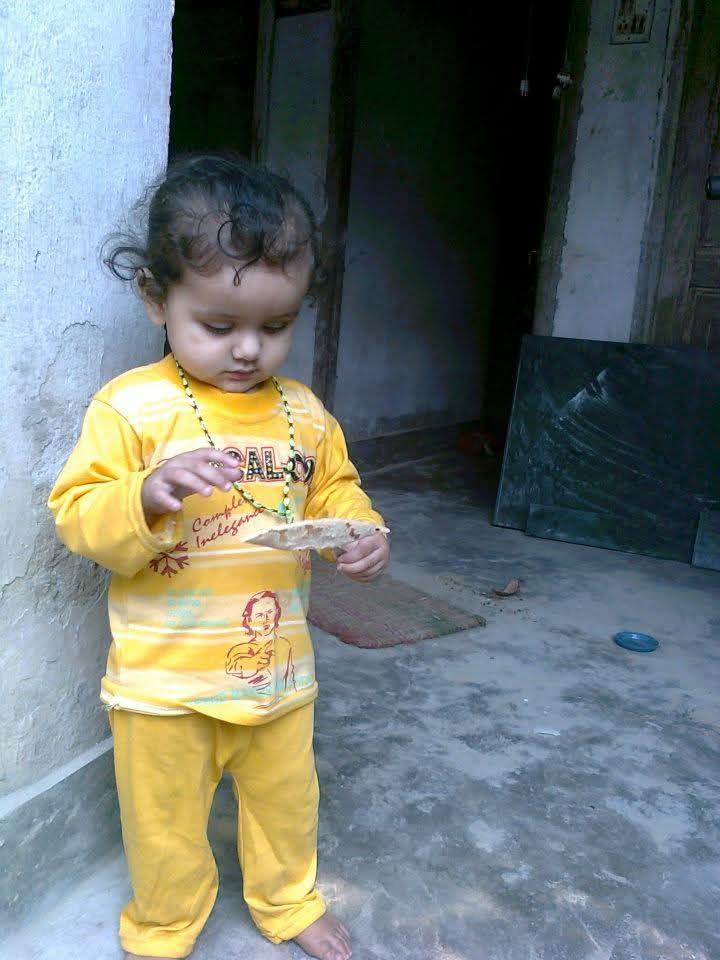
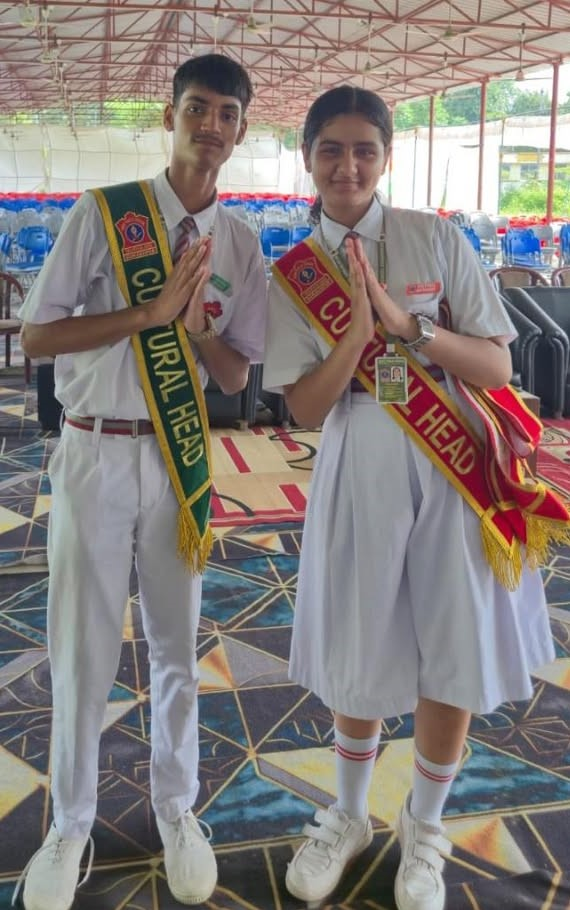
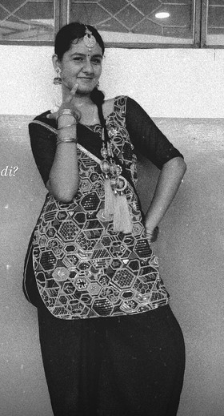

Why You’re Special
Beautiful & Cute
You are the perfect mix of elegance and cuteness—the kind of person who can light up even a boring class with just one smile and great humor and know where the boundary lies and reminds others as well
My Responsible Senior
Funny, hardworking, smart, and always looking out for everyone with a blend of warmth and wisdom.
Trust Issues, But Pure Heart
You don’t trust people easily, and that’s completely okay. It just means that when you do trust someone, it is real and priceless.
Our Cute Memories 📸
A few moments that make this friendship feel like home.


